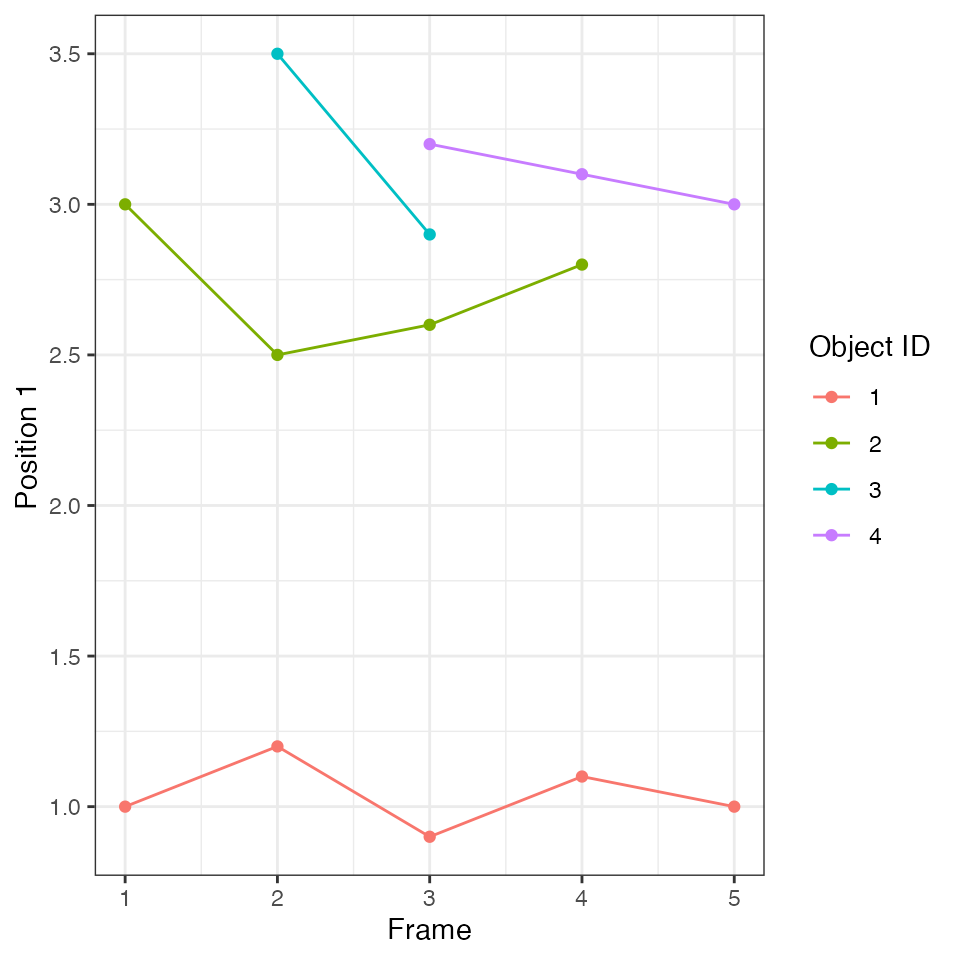
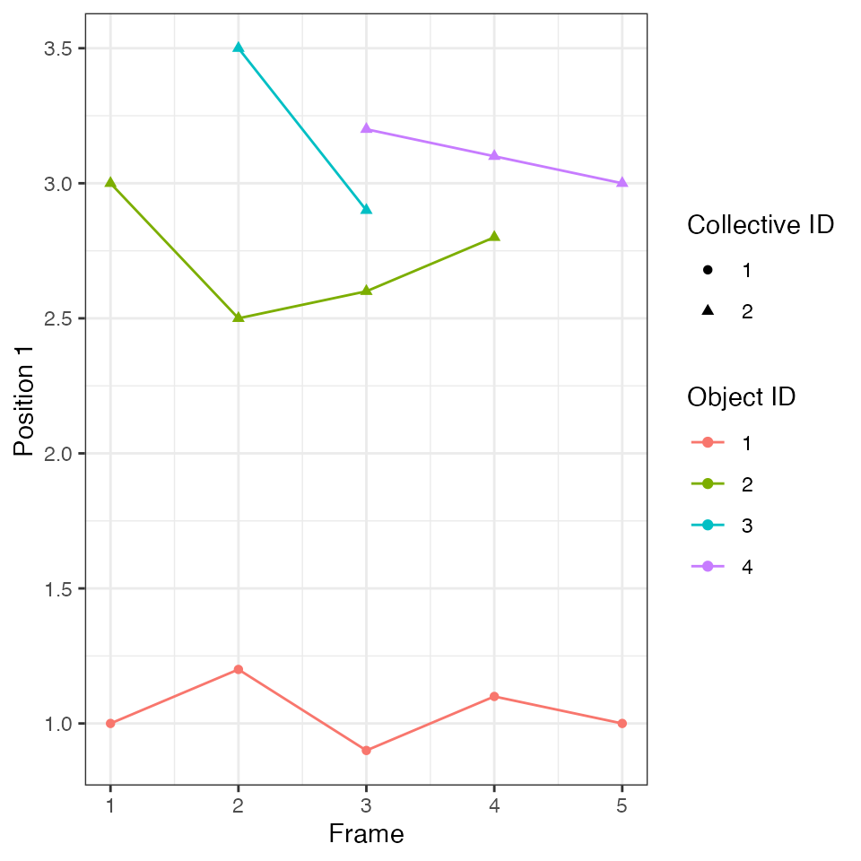

ARCOS-advanced.Rmd
library(ARCOS)
#> Warning: replacing previous import 'data.table::melt' by 'reshape2::melt' when
#> loading 'ARCOS'
library(data.table)At its core, the tracking algorithm starts with spatial clustering in the first frame with objects using dbscan algorithm. Objects from subsequent frames are added to existing clusters based on their threshold distance. Objects that cannot be added to any of the existing clusters are again spatially clustered and form potential seeds of new clusters. The entire procedure is repeated.
The application of this clustering procedure to collective activation events in biological systems requires identification of active objects, i.e. objects that will be passed to the clustering algorithm. In practice the single-cell activity over time needs to be thresholded and binarised. ARCOS offers several approaches to perform such approaches that will be covered below.
In this example 4 distinct objects are moving in 1 dimension over 5 time points. We aim to identify clusters of objects moving close to each other.
The minimal data in the long format consists of 3 columns:
frame with the frame number that corresponds to the time point,objid with the unique identifier of every object,x with the position of the object.
dts = data.table(frame = c(1, 1, 2, 2, 2, 3, 3, 3, 3, 4, 4, 4, 5, 5),
objid = c(1, 2, 1, 2, 3, 1, 2, 3, 4, 1, 2, 4, 1, 4),
x = c(1, 3, 1.2, 2.5, 3.5, 0.9, 2.6, 2.9, 3.2, 1.1, 2.8, 3.1, 1, 3))
knitr::kable(dts)| frame | objid | x |
|---|---|---|
| 1 | 1 | 1.0 |
| 1 | 2 | 3.0 |
| 2 | 1 | 1.2 |
| 2 | 2 | 2.5 |
| 2 | 3 | 3.5 |
| 3 | 1 | 0.9 |
| 3 | 2 | 2.6 |
| 3 | 3 | 2.9 |
| 3 | 4 | 3.2 |
| 4 | 1 | 1.1 |
| 4 | 2 | 2.8 |
| 4 | 4 | 3.1 |
| 5 | 1 | 1.0 |
| 5 | 4 | 3.0 |
Initiate an arcosTS object. Specify the names of frame, object id, and positions columns. The function simply adds attributes to the existing data.table object.
library(ARCOS)
ARCOS::arcosTS(dt = dts,
colPos = "x",
col = list(Frame = "frame",
RT = NULL,
IDobj = "objid",
IDcoll = NULL),
interVal = 1,
interType = "f")Plot the time series. Each object has a distinct identifier represented by a different colour in the plot:

In this step 3 objects on the top are grouped into a single collective event that spans 5 frames. A single object on the bottom forms a single-object event.
The most important parameter of the trackColl function is the search radius eps, which sets the distance for:
dbscan spatial clustering in a single time frame,The minimum size of the spatial cluster is set using the minClSz parameter, which is also passed to dbscan. The parameter nPrev determines the number of previous frames that are searched for collective events in order to match them to objects in the current frame.
dcoll = ARCOS::trackColl(dts)The output contains 3 columns with the frame number, object identifier, and the calculated identifier of the collective event:
| frame | objid | collid.frame | collid | x |
|---|---|---|---|---|
| 1 | 1 | 1 | 1 | 1.0 |
| 1 | 2 | 2 | 2 | 3.0 |
| 2 | 1 | 3 | 1 | 1.2 |
| 2 | 2 | 4 | 2 | 2.5 |
| 2 | 3 | 4 | 2 | 3.5 |
| 3 | 1 | 5 | 1 | 0.9 |
| 3 | 2 | 6 | 2 | 2.6 |
| 3 | 3 | 6 | 2 | 2.9 |
| 3 | 4 | 6 | 2 | 3.2 |
| 4 | 1 | 7 | 1 | 1.1 |
| 4 | 2 | 8 | 2 | 2.8 |
| 4 | 4 | 8 | 2 | 3.1 |
| 5 | 1 | 9 | 1 | 1.0 |
| 5 | 4 | 10 | 2 | 3.0 |
Plot:
Each trace is assigned an identifier of the collective event, which is represented by the shape of the point in the plot:

The algorithm with the default search radius eps=1.0 has identified two collective events. One is an event with only a single object, the latter is an event that consists of 1 to 3 objects at different points in time.